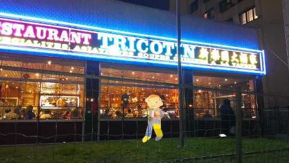
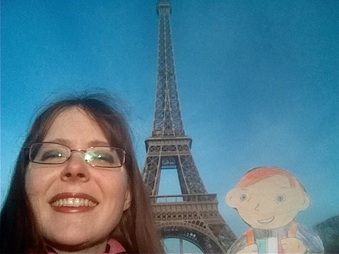

Today, I arrived in Paris, and aunt Carmen discovered my envelope in her mailbox after work. She let me out and introduced me to Benoît and the other family members, Nounours the teddy bear from Glendora, and Doupidou the plush giraffe. Carmen and Benoît seemed pretty tired after work, and I also had a bit of jet-lag, so we didn’t do too much tourism tonight. They just showed me around the neighborhood. They live in the thirteenth district of Paris, in Chinatown. We took a picture in front of Tricotin, a popular restaurant with Chinese, Vietnamese, Cambodian and other Asian dishes. The restaurant was full. 
Instead of inviting me to discover the local cuisine, Carmen and Benoît took me to McDonald’s. In the United States, people call it “Mickey D’s”, but in France, they call it “McDo”. (It sounds like "McDoh", not "McDoo".) In this particular McDo, there were Chinese New Year decorations. The official Chinese New Year day was on January 31, which was a few weeks ago. However, they celebrate it over a few weekends here. Where Carmen and Benoît live, the festivities include a parade with a dragon and drums, as well as small firecrackers that the people set off in the streets. However, these festivities are now over. All that remains are the decorations in McDonald’s.
This morning, Carmen took me to see some of the famous tourist sites, before going to work. She put me in her backpack and rode her bike to the Eiffel Tower. It was very calm around eight o’clock in the morning. I guess the tourists come out later. The Eiffel Tower was built for the World’s Fair in 1889, and was the tallest structure in the world until the Chrysler Building was built in New York in 1930. Even though it’s no longer the tallest structure, I thought it was pretty impressive. The tower is lit up at night. I only got to see it this morning though. We took a few nice pictures in front of the Eiffel Tower. An interesting fact is that anybody can take photos of the Eiffel Tower during the day, but at night, because of the artistic illuminations, people must ask for permission to use any photos they might take.
After visiting the Eiffel Tower, we went to the park in front of the Invalides (L’Hotêl national des Invalides). During the summer weekends, Parisians and tourists alike picnic and relax on the grass. On this cold Tuesday February morning, however, the fields were pretty much empty, though the traffic was busy with people going to work. We took some pictures of the Seine river, with the Eiffel Tower in the background, from the Alexandre III bridge. On this bridge, there are some statues of nymphs which are prettier than most statues I’ve seen so far. The statues on this bridge are decorated with gold. I’m not sure if it’s bronze or just painted gold, but it’s pretty nevertheless.
Carmen then took me to work. She rode her bicycle on a long bicycle path called the Coulée Verte. There are actually two places called “Coulée Verte” in Paris: one is also known as “Promenade Plantée” and is a pedestrian-only walkway above some buildings. The one Carmen took is a bicycle path that starts at the Montparnasse Tower, the tallest skyscraper in Paris, and continues south, outside of Paris, through neighboring cities, for about nine miles. Carmen told me she rode the whole path once, a few years ago.
Carmen works just south of Paris, in the city of Chatillon, for a company that does mobile phone apps. After we arrived at her office, she left me inside her backpack for most of the day. She did take me out briefly to introduce me to one of her coworkers though. She also showed me the decorations on her desk: a couple of miniature Android robots, a smiley stress-ball, and Computer Engineer Barbie. I thought Computer Engineer Barbie was pretty, but she was still stuck inside her box, which seemed kind of sad. Carmen told me that whenever one of her coworkers makes a bug in an app, they have to have Computer Engineer Barbie on their desk until they fix it. She said that in the office, this doll has been given the name “The Barbie of Shame.”
This evening Carmen and Benoît ate TV dinners. I still haven’t tried some typical French food like foie gras or a baguette. Maybe I will tomorrow.
This morning I went with Benoît to work. We took the metro. Benoît also works for a company that does mobile apps. His company is not very far from the Arc de Triomphe, another one of the most famous monuments in Paris. It lies at one end of the Champs Elysées, a long avenue with expensive luxury shops, cheap souvenir boutiques, movie theatres, and restaurants. There are always many tourists in this area. Benoît took me out for a few pictures in front of the Arc de Triomphe, before going to his office. Then he left me in his backpack for the rest of the day. He left some reading material for me in there though, so I didn’t get bored.
Tonight we went to a restaurant called l’Entracte, in the thirteenth district, about a mile from where Carmen and Benoît live. This restaurant has a cinema theme, with posters from old French movies decorating the walls. A movie theatre, UGC Gobelins, is just across the street. In France, all the movie theaters show both French and American movies. As for the American movies, some of the theaters show them with the original audio and French subtitles, and some of them show the movies with French voices dubbed in. Which is better is a subject of debate. Carmen and Benoît both prefer the movies with the original audio and subtitles. We didn’t go to the movies though.
Today I stayed home while Carmen and Benoît went to work. For a while, I watched the construction going on on the building next to the building where Carmen and Benoît live. In their neighborhood, there are many towers. The building they live in is a tower 30 stories high. A church is right next to their building as well, and it rang its bells around noon. I was kind of bored staying alone at the apartment all day today. I took a look around: they have many musical instruments: a saxophone, flute, clarinet, guitar, melodica, harmonicas, and a piano. Maybe they’ll give me a concert before I leave. I surfed the web for a while. I read the article about myself on Wikipedia. I was hoping there would be a French translation of my article, so I could learn a few words of French before leaving, but the only languages for my article are English and Interlingua. That's weird: who speaks Interlingua?
I went with Benoît to his work again. After work, we took some more pictures in front of the Arc de Triomphe. This time it was at night, and the monument was lit up. Today was Valentine’s Day. Carmen was teasing me that she should have brought Computer Engineer Barbie to hang out with me for Valentine’s Day.
Today, Carmen and Benoît took me with them to the city of Trappes, where Benoît’s parents live, about 21 miles southwest of Paris. It’s not very far from the Versailles castle. We actually stopped in Versailles to change trains, but we didn’t have enough time to visit the castle. Carmen and Benoît forgot they brought me though, so I stayed in a backpack the whole day long! I hope I get a chance to go out tomorrow.
Carmen and Benoît took me today for a quick visit of the city of Trappes. Trappes is a small city, with a population of about 30,000. That’s about one fifth of the population of Rancho Cucamonga. Near Trappes is a beautiful lake and surrounding park called the Étang de Saint-Quentin. Saint-Quentin is a neighboring city. The lake and park area have a diversity of wildlife, and people can participate in many activities there, from cycling to canoeing to fishing to miniature golf. After visiting the lake, Carmen and Benoît took some pictures of me in the city, in front of the church Église de Saint-Georges de Trappes, which was initially built between the 9th and 12th centuries. Since it had gotten into such poor condition over the centuries, it was actually later rebuilt around 1700. That’s still pretty old as far as I’m concerned. I met Benoît’s parents, who were very nice. His mother made us a homemade apricot pie which was very good.
Tonight we returned back to Paris.
Today was my last full day in Paris. Carmen took me to work again, and after work, we met Benoît at the Pont des Arts bridge, a pedestrian bridge which crosses the Seine river. Many tourists and Parisians have attached small padlocks to the railing of this bridge. These locks are known as “love locks” because it is often couples who attach locks and throw the keys into the river to symbolise their commitment. The closest bridge like that to Rancho Cucamonga is Cabrillo Bridge, in Balboa park, in San Diego. Maybe some day I’ll go there and attach a padlock. After visiting the Pont des Arts bridge, we walked around for about a half hour until we found a nice restaurant, le Mondrian, where Benoît and Carmen ordered cheeseburgers. I thought we would eat raclette or crêpes at least once, but no. Well, there are some types of French cuisine that I wouldn’t want to try, such as frog legs or snails. I think croissants are good enough for now, and when I’m grown up, I may enjoy a glass of Bordeaux.
Tomorrow I’ll be heading back to Rancho Cucamonga. I’m looking forward to seeing Daniel again. I can’t wait to tell him about my trip! I am bringing home a couple of Paris metro maps with me as a souvenir.